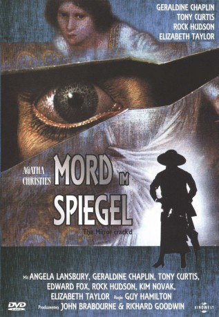
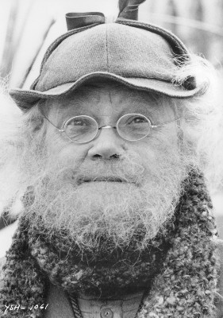

#2707 Mord im Spiegel
Alternativ: The Mirror Crack'd
 
 IMDB-Wertung: 6.2 / 10
IMDB-Wertung: 6.2 / 10  Metascore: 0
Metascore: 0 
Ein Filmteam fällt über das Dörfchen St. Mary her. An vorderster Front zwei alternde Diven, die sich einen gnadenlosen Kampf ums Comeback liefern - mit mörderischen Folgen: Die Sekretärin des Bürgermeisters stirbt durch einen Giftanschlag, der offensichtlich Darstellerin Marina (Elizabeth Taylor) galt. Inspektor Craddock (Edward Fox) geht mit seiner Tante, einer gewissen Miss Marple, auf die Suche nach dem Täter…
Jahr: 1980
Dauer: 105 Minuten
FSK: 12
Land: England Studio: Kinowelt Home EntertainmentTonspuren:
Untertitel:
Auflösung: 1080p (1920x1040) Größe: 6707 MB
Genre: Thriller, Krimi, Mystery
Regisseur: Guy Hamilton
Drehbuch: Jonathan Hales, Barry Sandler, Agatha Christie
Soundtrack: John Cameron
Darsteller:
 Angela Lansbury als Miss Marple
Angela Lansbury als Miss Marple Charles Gray als Bates, The Butler
Charles Gray als Bates, The Butler Geraldine Chaplin als Ella Zielinsky
Geraldine Chaplin als Ella Zielinsky Tony Curtis als Martin N. Fenn
Tony Curtis als Martin N. Fenn Edward Fox als Inspector Craddock
Edward Fox als Inspector Craddock Rock Hudson als Jason Rudd
Rock Hudson als Jason Rudd- Kim Novak als Lola Brewster
 Elizabeth Taylor als Marina Rudd
Elizabeth Taylor als Marina Rudd- Dinah Sheridan als Lady Amanda Ridgeley, 'Murder at Midnight'
-  Nigel Stock als Inspector Gates, 'Murder at Midnight'
 Pierce Brosnan als Actor playing 'Jamie' , uncredited
Pierce Brosnan als Actor playing 'Jamie' , uncredited Derek Lyons als Queen's Guard , uncredited
Derek Lyons als Queen's Guard , uncredited- Wendy Morgan als Cherry
- Margaret Courtenay als Mrs. Bantry
- Maureen Bennett als Heather Babcock
- Carolyn Pickles als Miss Giles
- Eric Dodson als The Major
- Charles Lloyd Pack als Vicar
- Richard Pearson als Doctor Haydock
- Thick Wilson als The Mayor
- Pat Nye als Mayoress
- Peter Woodthorpe als Scout Master
- Marella Oppenheim als Margot Bence
- Anthony Steel als Sir Derek Ridgeley, 'Murder at Midnight'
- Oriane Grieve als Kate Ridgely, 'Murder at Midnight'
- Kenneth Fortescue als Charles Foxwell, 'Murder at Midnight'
- Hildegard Neil als Lady Foxcroft, 'Murder at Midnight'
 Allan Cuthbertson als Peter Montrose, 'Murder at Midnight'
Allan Cuthbertson als Peter Montrose, 'Murder at Midnight'- George Silver als Da Silva, 'Murder at Midnight'
 John Bennett als Barnsby, 'Murder at Midnight'
John Bennett als Barnsby, 'Murder at Midnight'- John Dalby als Bandmaster , uncredited
- Bill Dean als 1st Man in Village Hall , uncredited
 Frank Ellis als Policeman , uncredited
Frank Ellis als Policeman , uncredited- Sam Kydd als Film Technician , uncredited
- Charles Lamb als 2nd Man in Village Hall , uncredited
- Richard Leech als Director of Photography , uncredited
- Angus MacKay als Coroner , uncredited
- Robert Raglan als Villager , uncredited
Datei: X:\Person\Agatha Christie\Mord im Spiegel (1980, FSK12, 1920x1040).mkv seit 03.12.2015
Festplatte: HD Collection-7+mehr(A-Z)+Person
 Es gibt insgesamt 12 Filme in der Gruppe 'Person\Agatha Christie'
Es gibt insgesamt 12 Filme in der Gruppe 'Person\Agatha Christie'